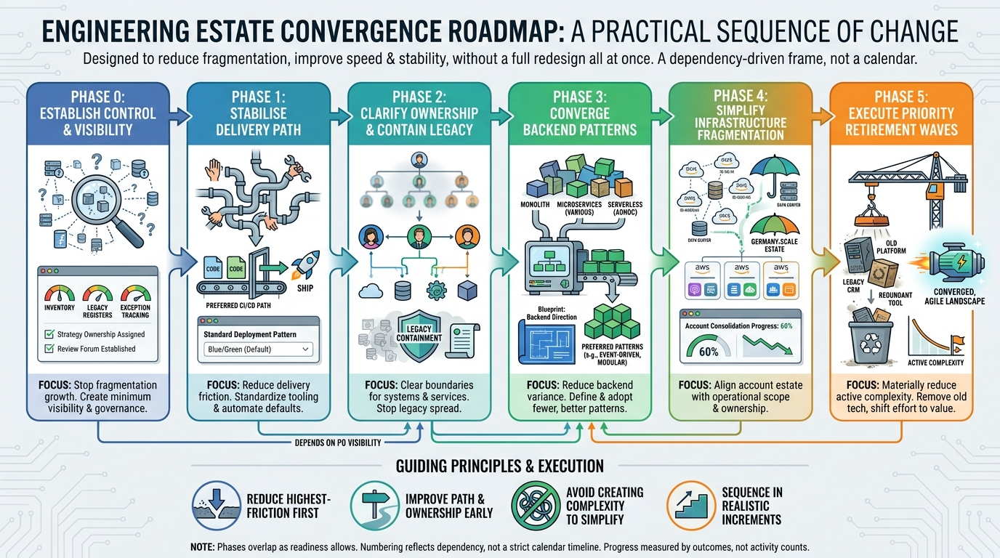

Roadmap and Targets
Roadmap: Six Phases from Visibility to Material Legacy Retirement

Image generated by Google Gemini (gemini-3-pro-image-preview)
Roadmap and Targets

Image generated by Google Gemini (gemini-3-pro-image-preview)